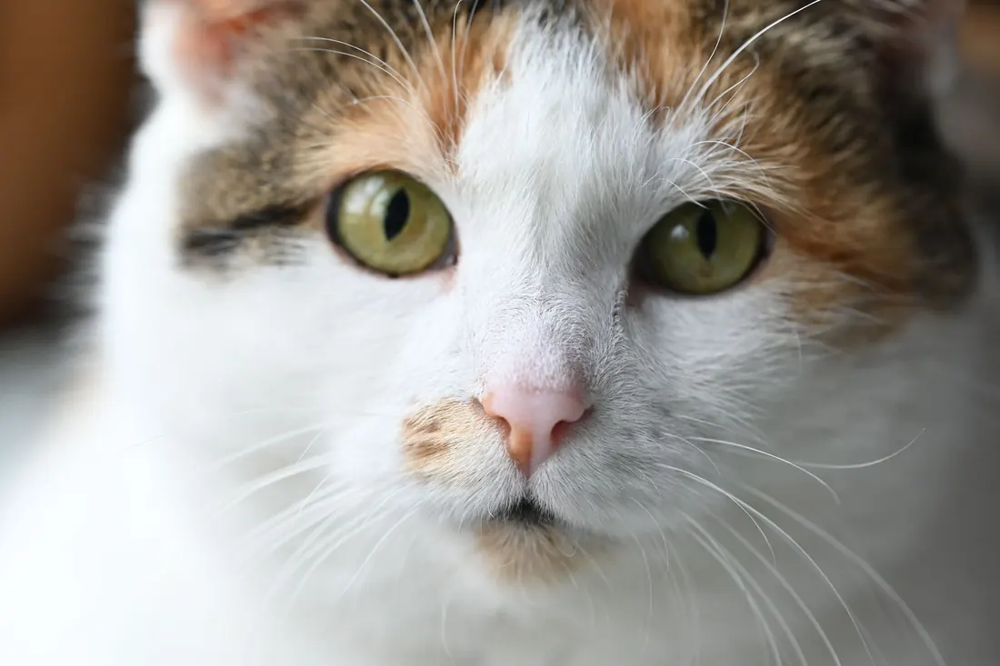

Augen und Bindehaut
Rote, tränende oder verklebte Augen sind für Ihr Tier unangenehm, und manche Augenerkrankungen gehen schnell aufs Sehen. Ich untersuche die Augen bei Ihnen zu Hause und behandle die Ursache.
Woran Sie es merken: Rote Augen · Tränen · Zukneifen

- Ihr Tier kneift ein Auge fest zu oder reibt es ständig.
- Das Auge ist plötzlich trüb, bläulich oder milchig.
- Etwas steckt im Auge, oder Ihr Tier hat sich am Auge verletzt.
- Die Pupillen sind unterschiedlich groß.
Was ich bei Ihnen mache
Ich sehe mir beide Augen, die Lider und die Bindehaut genau an.
Mit einem Farbtest prüfe ich, ob die Hornhaut verletzt ist. Davon hängt ab, welche Augentropfen Ihr Tier bekommen darf.
Dann bekommt Ihr Tier passende Tropfen oder Salbe, und ich zeige Ihnen, wie Sie sie geben.
Nach einigen Tagen kontrolliere ich, ob das Auge heilt.
Braucht Ihr Tier eine Messung des Augeninnendrucks oder einen Eingriff am Auge, überweise ich es an eine tierärztliche Augenpraxis oder Klinik.
Bis ich bei Ihnen bin
- Geben Sie keine Augentropfen für Menschen und keine alten Tropfen aus dem Schrank. Bei einer Verletzung der Hornhaut schaden manche Wirkstoffe.
- Wischen Sie verklebte Lider mit einem feuchten, sauberen Tuch von außen nach innen ab.
- Halten Sie Ihr Tier davon ab, sich am Auge zu kratzen.
Was auf Sie zukommt
Ich rechne nach der Gebührenordnung für Tierärzte ab, dazu kommt die Hausbesuchsgebühr. Bevor ich behandle, sage ich Ihnen, womit Sie rechnen müssen.
Alles zur AbrechnungHäufige Fragen
Ist eine Bindehautentzündung ansteckend?
Das hängt von der Ursache ab. Bei Katzen stecken oft Viren dahinter, die andere Katzen im Haushalt anstecken. Ich sage Ihnen nach der Untersuchung, worauf Sie achten müssen.
Kann ich Kamillentee nehmen?
Nein, bitte nicht. Kamille reizt das Auge zusätzlich. Ein Tuch mit klarem, abgekochtem Wasser reicht zum Säubern.
[FEHLT: fachliche Freigabe der Texte durch Herrn Al Saeed]
Ich komme zu Ihnen nach Hause.
Rufen Sie an oder fragen Sie einen Termin an. Mein Team meldet sich so schnell wie möglich und macht mit Ihnen eine Uhrzeit aus.